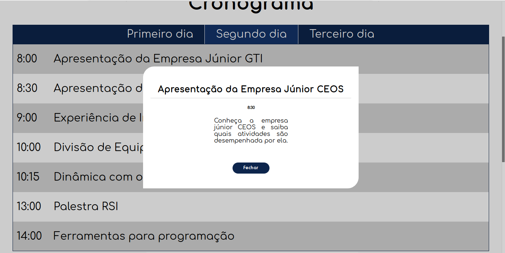

Repita o exercício anterior, mas agora centralize o "modal-content" com flexbox layout.
Um modal é um bloco que abre ao você clicar em algum elemento da tela principal. Crie um modal apenas com regras estilo de posicionamento. Não use flexbox ou grid layout. ;Veja a imagem abaixo para entender melhor o que é um modal.
Dica: Para fazer um fundo transparente, utilize a regra background-color: rgba(0,0,0,0.2). Busque saber a lógica por trás da montagem de um modal antes de começar. Por exemplo, o modal deve ficar acima de todo o conteúdo principal no eixo z. Também não fica nem abaixo, nem acima.